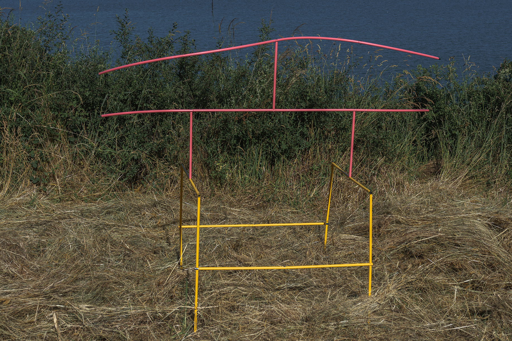
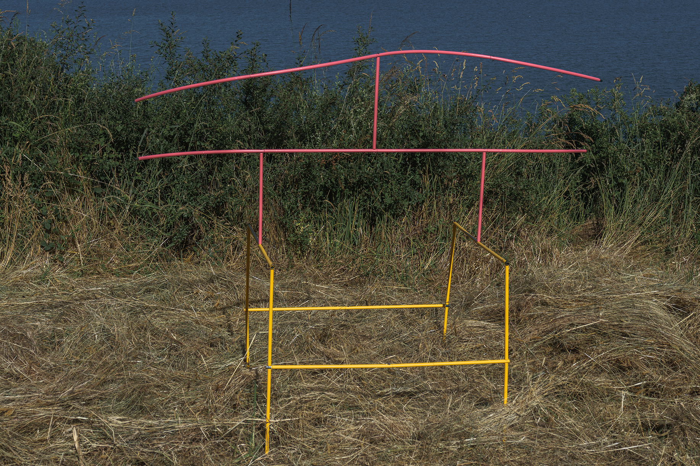

* La zone périlunaire (Lunar peripheral space), 2019
* La zone périlunaire (Lunar peripheral space), 2019
I seek to embellish the world so that it may become more livable; I seek to bring poetry and transcendence into what feels to me too concrete or too rigid.
I try to offer a different imagery, as a response to modernity, to excessive structuring, and to imposed knowledge.
I look for an entry point, an exit, a space set apart, a place where one can rest. I imagine worlds
— an ideal world, an imaginary world.
And sometimes, because this process is a vast adventure, I lose myself in the corners of my psyche, somewhere between shadow and light.
Delphine C. Bertrand
I try to offer a different imagery, as a response to modernity, to excessive structuring, and to imposed knowledge.
I look for an entry point, an exit, a space set apart, a place where one can rest. I imagine worlds
— an ideal world, an imaginary world.
And sometimes, because this process is a vast adventure, I lose myself in the corners of my psyche, somewhere between shadow and light.
Delphine C. Bertrand
PROJECTS
 * Untiteled (Fire Walk With Me), 2025
* Untiteled (Fire Walk With Me), 2025
 * Ici repose Lamour (Here lies Love), with the participation of Robert Kirov, 2024
* Ici repose Lamour (Here lies Love), with the participation of Robert Kirov, 2024
 * Le Bonheur (Happiness), 2022-2024
* Le Bonheur (Happiness), 2022-2024
* Jouer (To Play), 2022
 * La Chance (Luck), with Kahina Loumi, 2021
* La Chance (Luck), with Kahina Loumi, 2021
 * Focul care Arde (The Fire that Burns), 2020
* Focul care Arde (The Fire that Burns), 2020
 * La zone périlunaire (Lunar peripheral space), 2019
* La zone périlunaire (Lunar peripheral space), 2019
 * Le chercheur d'or (The gold digger), 2018
* Le chercheur d'or (The gold digger), 2018
 * La Réserve (Reserve), during La Grande Diagonale, curated by Bruno Peinado, 2021
* La Réserve (Reserve), during La Grande Diagonale, curated by Bruno Peinado, 2021
SOME OTHER WORKS
 * Jardin d'hiver (Winter garden), during Essayer de la sculpture Studio Plijadur, 2020
* Jardin d'hiver (Winter garden), during Essayer de la sculpture Studio Plijadur, 2020
 * Selected installations works until 2018
* Selected installations works until 2018
 * Selected sculptures works until 2018
* Selected sculptures works until 2018
 Focul care Arde, work in progress
Focul care Arde, work in progress
Various materials, audio speakers broadcasting a song composed by the artist Harilay Rabanjamina for the installation, text written along the trip from France to Romania, translate from French to Romanian and prints on sheets to take away
Timişoara French Institute, Romania
February 2019
* Untiteled (Fire Walk With Me), 2025* Ici repose Lamour (Here lies Love), with the participation of Robert Kirov, 2024* Le Bonheur (Happiness), 2022-2024* Jouer (To Play), 2022
* La Chance (Luck), with Kahina Loumi, 2021* Focul care Arde (The Fire that Burns), 2020* La zone périlunaire (Lunar peripheral space), 2019* Le chercheur d'or (The gold digger), 2018* La Réserve (Reserve), during La Grande Diagonale, curated by Bruno Peinado, 2021SOME OTHER WORKS
* Jardin d'hiver (Winter garden), during Essayer de la sculpture Studio Plijadur, 2020* Selected installations works until 2018* Selected sculptures works until 2018
Various materials, audio speakers broadcasting a song composed by the artist Harilay Rabanjamina for the installation, text written along the trip from France to Romania, translate from French to Romanian and prints on sheets to take away
Timişoara French Institute, Romania
February 2019